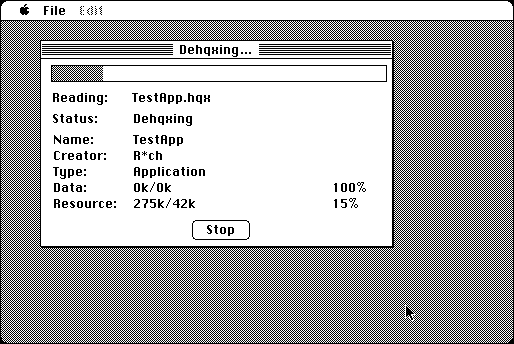

Download
dehqx-201.zip (33K) DeHQX 2.0.1 repackaged into a zipped hfs disk image and checksum file. The disk image can be mounted with Mini vMac.
dehqx-201.sit (29K) DeHQX 2.0.1 in the original format.
copyright: Peter N. Lewis
mod date: Jul 29, 1993
license: free for non-commercial use
from url :
Stairways Files
BinHex decoder. Source code is available (below).

Download Source
dehqx-20-source.zip (49K) DeHQX source repackaged into a zipped hfs disk image and checksum file. The disk image can be mounted with Mini vMac.
dehqx-20-source.sit (74K) DeHQX source in the original format.
If you find these downloads useful, please consider helping the Gryphel Project, which hosts them.
Here are the md5 checksums for the downloads, signed with Gryphel Key 5:
--------- GRY SIGNED TEXT --------- 96089d9b7c3d98a7a9b7dc1649ba8bec dehqx-201.zip c792b253204c007d1f876477f45c8828 dehqx-201.sit c6d56e825f5986e70274041d2193cbce dehqx-20-source.zip 7203c281460de82f71693864f6c39f0b dehqx-20-source.sit ------- BEGIN GRY SIGNATURE ------- Gry/4Xa8CFcUzxdN/IQ5R+L6n84iE+j0eVcTQXCFQex2X4B7+yyayFRzbLt+oz3x UXKDgABbK+hrTZ2wFZb+XCfWO+nOiJ//QRdyh0/TyhdyVEFUST5mq2Ts/JwX/KR1 kSVITNrXR4R7TUL2QiJMr8GPFFTXWUwjPs93zf5XEW8qlYipQD5nry5QGCh1XyAH -------- END GRY SIGNATURE --------